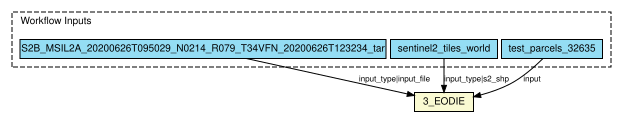

This workflow demonstrates the usage of EODIE, a toolkit to extract object based timeseries information from Earth Observation data. EODIE is a toolkit to extract object based timeseries information from Earth Observation data. The EODIE code can be found on [Gitlab](https://gitlab.com/fgi_nls/public/EODIE) . The goal of EODIE is to ease the extraction of time series information at object level. Today, vast amounts of Earth Observation data are available to the users via for example earth explorer or scihub. Often, not the whole images are needed for exploitation, but only the timeseries of a certain feature on object level. Objects may be polygons depicting agricultural field parcels, forest plots, or areas of a certain land cover type. EODIE takes the objects in as polygons in a shapefile as well as the timeframe of interest and the features (eg vegetation indices) to be extracted. The output is a per polygon timeseries of the selected features over the timeframe of interest. **Online documentation** EODIE documentation can be found [here](https://eodie.readthedocs.io/en/latest/). **Abstract CWL** Automatically generated from the Galaxy workflow file: Workflow constructed from history 'EODIE Sentinel'
{kind=link}